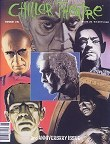

Kevin Celment - Editor
Chiller Theatre, Inc.
P.O. Box 23
Rutherford, NJ 07070
|
Chiller Theatre is a magazine for fans of the early Horror movies.
Each issue has a full color cover and contains movie related articles,
interviews, kit reviews, and more.
Four issues are published each year.
Back issues are available.
|

|
Issue #6 Contents
- Editorial
- Retrospect: GORGO by Deborah Del Vecchio
- Frankenstein And Me by Jessie Lilley
- The Haunted Stranger by Kevin G. Shinnick
- Castle Of Frankenstein by Richard Bojarski
- Tweenty-Five Movies To See by Tom Rogers
- Horror According To T.H. Pine by T.H. Pine
- Memorabilia Collector by Harriet Harvey
- Quiz: Peter Lorre by Les Williams
- The Resin Report by Richard Hilliard
- Around The Kit World In A Daze! by Ed Bowkley
- I Heard It Through The Graveyard by Dan Cziraky
- Lazer Reviews by Deborah Del Vecchio
- Fright Frame
- Film Flashback by Kronos
- Zacherley Comic Strip by Dan Gallagher
|
Ordering Information

The Gremlins in the Garage webzine is a production of
Firefly Design. If you have any questions or comments please
get in touch.
Copyright © 1994-1997
Firefly Design.
{kind=link}